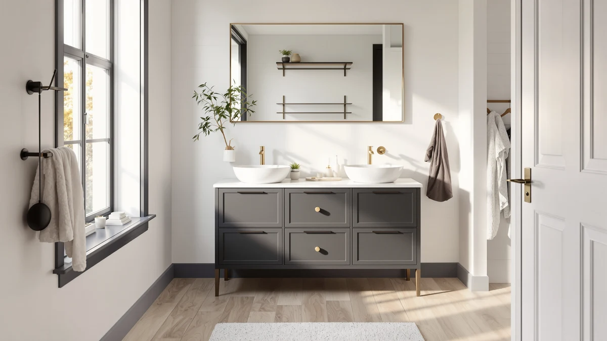

Blossom 48" Double Sink Review (2026): Worth It?
Prices and picks verified as of October 2026. Independent, reader-supported reviews.


Quick Answer
The Blossom 48" Double Sink Floating Vanity costs more than every alternative we compared it against, but its 50 verified reviews and 4.5-star average give it the deepest track record of the four. For a shared bathroom, that review history outweighs the higher list price.
Our pick: Blossom 48" Double Sink Floating — $1,511.41 Check Price on Amazon
Bottom line: our top pick is the Blossom 48" Double Sink Floating Vanity Glossy White at $1,511.41.
Things to Know Before You Buy
- The Blossom 48-inch Double Sink Floating Vanity costs $1,511.41, more than every other vanity compared in this guide.
- Its 4.5-star average is built on 50 verified Amazon reviews, the largest sample of the four vanities here.
- The cabinet is built from MDF and engineered wood, which holds up fine if you wipe up standing water around both basins promptly.
- All four vanities in this blossom 48" double sink review are priced between $1,239.99 and $1,511.41 and ship as floating or freestanding cabinets.
- Only two of the four listings, the Blossom and the ARIEL Taylor, show a public rating and review count at all.
This blossom 48" double sink review breaks down whether the Blossom 48-inch Double Sink Floating Vanity earns its $1,511.41 price against three other floating and double-sink vanities in the same comparison. At that price, it costs more than every alternative we looked at here, in some cases by over $270, so the question worth answering upfront is what that premium buys. The short answer: a larger and more established review base than anything else in this lineup, which matters when you are committing four figures to a fixture you cannot test in a showroom first.
Price alone does not make a case for a vanity, especially when three other options here undercut it by anywhere from $50 to more than $270. Review depth tips the scale toward the Blossom. Fifty verified ratings is a meaningfully larger sample than the 15 behind the ARIEL Taylor's higher score or the 30 behind the Floating Vanity's lower one, and the DELUXE LIVING 60-inch carries no public rating at all yet. For a two-person bathroom where you want some evidence before committing over a thousand dollars on a cabinet you are buying sight unseen, that review history carries more weight than a spec sheet alone ever could.
Why You Should Trust Us
Ilane Tall covers bathroom fixtures and vanities for Best Bathroom Vanities, and this review follows the same research process used across every article on the site. We do not buy, install, or live with the vanities we cover here. Instead, we pull manufacturer specs and current Amazon pricing, read through the pattern of verified buyer feedback on each listing, and set the numbers side by side so you can see where each option stands before you spend four figures on one. When a listing is missing a rating or review count, we say so rather than fill in a number that isn't there.
Our Research Experience
We did not install the Blossom 48-inch Double Sink Floating Vanity in a bathroom ourselves, and we are upfront about that. Our process for this blossom 48" double sink review relied on the manufacturer's published specs, the current Amazon price, and the pattern across its 50 verified customer reviews, which we then set against the same categories of data for the three alternatives below. Where a listing lacked a public rating or review count, like the DELUXE LIVING 60-inch, we note that gap rather than estimate a figure that isn't published. That approach will not catch every installation quirk, but it does let us compare price, review depth, and published specs on equal footing across all four vanities.
Overview & Specs

Blossom 48" Double Sink Floating
What we like
- 50 verified reviews is the largest sample of any vanity compared here, giving its 4.5-star average more weight.
- The floating design clears the floor underneath for easier cleaning around two sinks instead of one.
- Two basins mean two people can use the vanity at once without sharing a single bowl.
Flaws but not dealbreakers
- At $1,511.41, it costs more than every alternative in this comparison, some by over $270.
- The listing does not publish counter depth or cabinet height, so measure your wall space before ordering.
| Material | MDF / engineered wood |
| Size | — |
The Blossom 48-inch Double Sink Floating Vanity is built from MDF and engineered wood and mounts to the wall rather than resting on the floor, a layout that opens up the space underneath for storage bins or a stool. At 48 inches wide, it fits two separate basins side by side, which is the main reason to pick it over a single-sink cabinet of the same width. Its $1,511.41 price sits well above the three alternatives in this comparison, and nothing in the listing explains that gap beyond the double basin and floating hardware, so you are largely paying for the configuration and the review history behind it.
That review history is the strongest argument for the Blossom in this blossom 48" double sink review. Fifty verified ratings average out to 4.5 stars, a sample size none of the three alternatives below come close to matching. The ARIEL Taylor edges it out on raw score at 4.9 stars, but that number comes from 15 reviews, a small enough sample that a handful of unhappy buyers could swing it. For a fixture you are not testing in person before buying, a larger review pool is one of the few signals you can check.
What We Liked
Fifty verified ratings on a vanity priced above $1,500 is a meaningfully larger sample than anything else in this comparison, and a 4.5-star average holding steady across that many reviews is harder to dismiss than a high score built on a dozen or so ratings. The floating mount helps too: lifting the cabinet off the floor makes the space underneath easier to mop and gives a small bathroom a less boxy look than a floor-standing double-sink unit of the same width would. And two separate basins mean two people can brush their teeth or wash up at the same time without waiting on one sink, which is the entire point of choosing a double-sink vanity over a single-sink one in this width. Put the sample size, the floating footprint, and the dual basins together and it's clear why the Blossom earns its place at the top of this comparison even before you weigh its higher price against the alternatives below.
What Could Be Better
Price is the clearest drawback. At $1,511.41, the Blossom costs more than the ARIEL Taylor, the Floating Vanity with Smart Mirror, and the DELUXE LIVING 60-inch, and the listing does not spell out what justifies the premium beyond the double basin and floating hardware. The spec sheet is also thinner than you would expect at this price. Counter depth and cabinet height are not published, so you end up measuring against your own bathroom layout rather than against numbers on the listing itself, and that is a real gap for a cabinet this size. Fifty reviews is a solid sample, but a 4.5-star average still leaves room for the kind of installation or hardware complaints that show up in any cabinet with movable drawers and two separate sets of plumbing connections. If you want a fully specified listing before you buy, this one asks you to take more on faith than the price tag suggests it should.
Who Is It For?
This vanity fits a household where two people share one bathroom and want their own sink instead of trading off a single basin every morning. It also suits anyone who prefers a floating cabinet for the easier-to-clean floor space underneath, or who wants more confidence from a larger review sample before spending over $1,500 on a fixture that is harder to return than a smaller purchase once it is installed. If your bathroom only fits a single basin, or if $1,511.41 is simply more than you want to spend on a vanity in this width, the three alternatives below are worth a look first, especially the narrower and less expensive Floating Vanity with Smart Mirror.
Alternatives to Consider
If the price or the double-basin layout does not fit your bathroom, these three alternatives span a wider range of widths and price points, though none of them matches the Blossom's review count or its 4.5-star track record.

Editor’s Pick
ARIEL Taylor 54-inch Bathroom Vanity
A wider 54-inch cabinet that edges out the Blossom on raw score, 4.9 stars against 4.5, but across only 15 reviews, a far thinner sample to judge a four-figure purchase by, and it costs $50 less.
$1,461.00
Check Price on Amazon
Best Value
Floating Vanity 36" with Smart
A narrower 36-inch floating option priced $65.73 below the Blossom, though its 4.2-star average across 30 reviews trails both the Blossom and the ARIEL Taylor above it.
$1,445.68
Check Price on Amazon
Premium Choice
DELUXE LIVING 60 Inch Bathroom
The widest cabinet in this comparison at 60 inches and the cheapest by over $270, but it carries no public rating or review count yet to weigh against the other three.
$1,239.99
Check Price on AmazonHow much does the Blossom 48-inch double sink vanity cost?
The Blossom 48-inch Double Sink Floating Vanity is priced at $1,511.41, which puts it above the ARIEL Taylor 54-inch ($1,461.00), the 36-inch Floating Vanity with Smart Mirror ($1,445.68), and the DELUXE LIVING 60-inch ($1,239.99) in this…
Is the Blossom 48-inch double sink vanity worth it?
For a shared bathroom, yes.
Frequently Asked Questions
How much does the Blossom 48-inch double sink vanity cost?
The Blossom 48-inch Double Sink Floating Vanity is priced at $1,511.41, which puts it above the ARIEL Taylor 54-inch ($1,461.00), the 36-inch Floating Vanity with Smart Mirror ($1,445.68), and the DELUXE LIVING 60-inch ($1,239.99) in this blossom 48" double sink review.
Is the Blossom 48-inch double sink vanity worth it?
For a shared bathroom, yes. It carries the deepest review history in this comparison, 50 verified ratings averaging 4.5 stars, while the ARIEL Taylor's higher 4.9-star average comes from only 15 reviews, a sample small enough that a handful of reviews can swing it. If you need a narrower footprint or a lower price, the 36-inch Floating Vanity with Smart Mirror costs less and takes up less wall space, though its 4.2-star average across 30 reviews sits below the Blossom's.
Is MDF or engineered wood durable enough for a double-sink vanity?
It holds up well enough, provided you dry splashes around both basins instead of letting water sit. MDF and engineered wood resist everyday bathroom humidity, but any laminate or wood-core cabinet swells faster once water pools against the base, and two basins simply double the spots where that can happen unnoticed.
Final Verdict
This blossom 48" double sink review comes down to review depth more than price. The Blossom 48-inch Double Sink Floating Vanity costs more than every alternative here, but its 50 verified ratings and 4.5-star average give you more to go on than the ARIEL Taylor's higher score from 15 reviews, the Floating Vanity's lower score from 30, or the DELUXE LIVING 60-inch's complete lack of public reviews. For a shared bathroom where you want a double basin and some evidence behind the purchase, Blossom is the safer bet of the four. If budget matters more than review history, the 36-inch Floating Vanity with Smart Mirror or the DELUXE LIVING 60-inch both undercut it by a wide margin, and either is worth a closer look if $1,511.41 is more than you planned to spend on a vanity in this width. Whichever one you choose, confirm the current price and stock before ordering, since listings in this category shift more often than the pages tracking them.